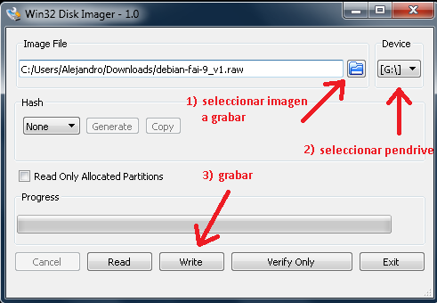

para poder grabar la imagen raw en un pendrive, tenemos que:
luego de esto podremos reiniciar la PC. y continuar con la instalación
Para grabar en el pendrive, utilizar el comando “dd”:
por ejemplo, si el pendrive fue reconocido como “/dev/sdb”, entonces el comando sería el siguiente:
$ dd if=/lugar/de/origen/debian-fai_v1-1.raw of=/dev/sdx bs=1M; sync
donde sdx es el pendrive
El proceso tarda varios minutos, se puede ver el progreso instalando previamente el paquete “pv”:
$ apt-get install pv
$ dd if=/lugar/de/origen/debian-fai_v1-1.raw |pv|dd of=/dev/sdx bs=1M; sync